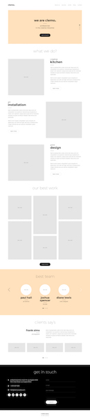
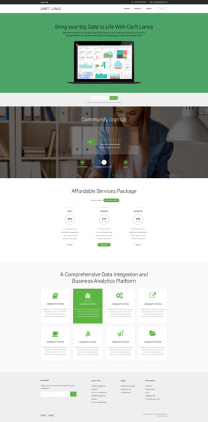
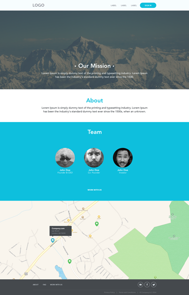

Practice Project
Girl Develop It Los Angeles
Wifi & Slides
Wifi network: IndieDesk
Wifi password: dtlatech
How this works
First, pick your level:
- 1. Basic
- Basic knowledge of HTML and CSS. Will build out a fixed-width page.
- 2. Responsive
- Some experience with media queries and flexible media. Will build out a responsive page.
- 3. Interactive
- Some experience working with JavaScript. Will build a responsive page with at least one interactive element.
- 4. WordPress Dev
- Some experience working with WordPress themes/child themes. Will build out the page as a WordPress theme.
Form Teams
Team up with other students who match your level.
Choose a proejct
Once you've got your team, flip through the next few slides and choose a project.
Clemo

- Simple, clean design
- Lots of different sections
- Some sections have a layout challenge to tackle
- Great option for working with flex box
- Multiple pages available to work on
Craft Lance

- Flat design
- Fun layout challenges
- Great chance to work with flex box
Simple

- Flat design
- Great for beginners
- Ideal first-time project
Get to work
Get to work
Now that you've got your team and your project, get to work!
Work with your team members and your mentor to decide the best plan of action.
You can pair program and all work together, or set up version control and all work on your own on different parts of the project
Tips
Don't be afraid to ask questions! Ask anything at any time.
Take breaks for restroom, food, drink, or just to rest your eyes and fingers as needed.
If you don't finish your selected project today, keep going after you get home!
Thank you!!
Thanks for coming out on a weekend to work on learning code! #weekendwarriors